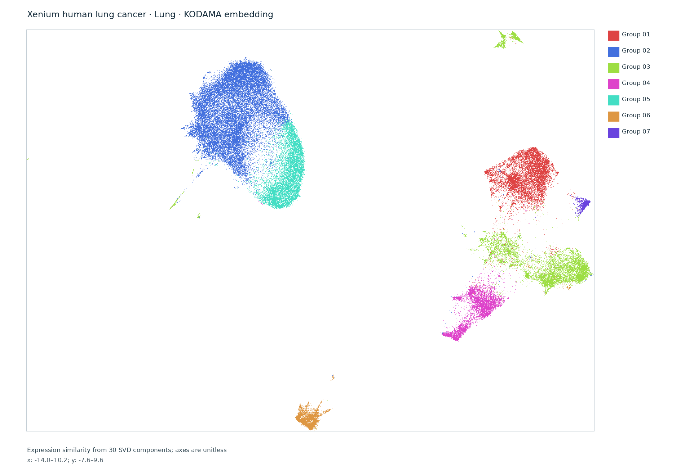
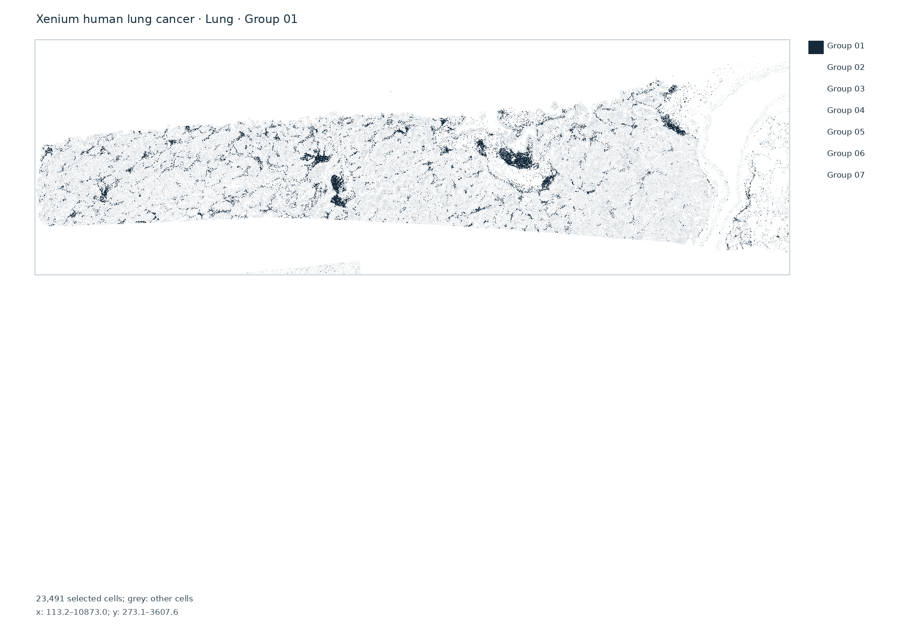
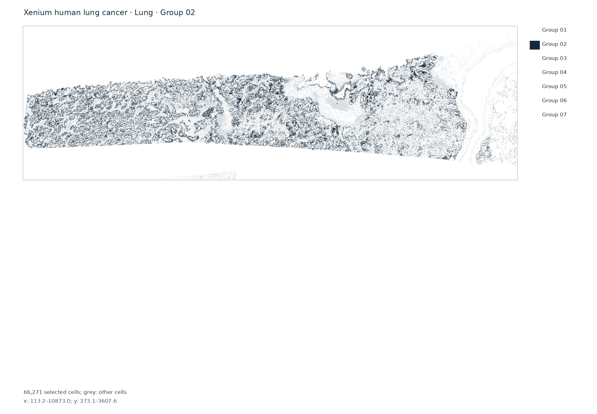
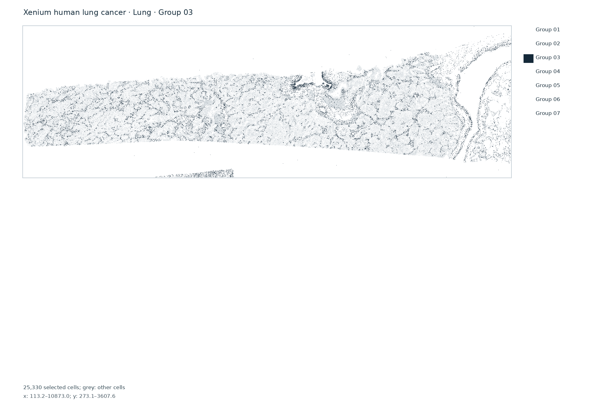
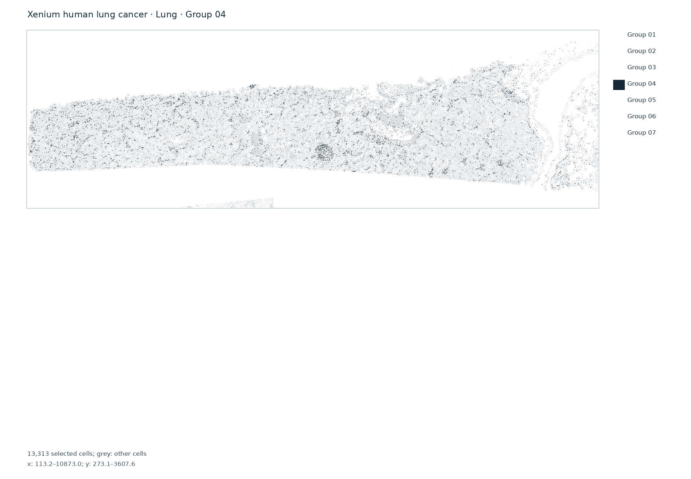
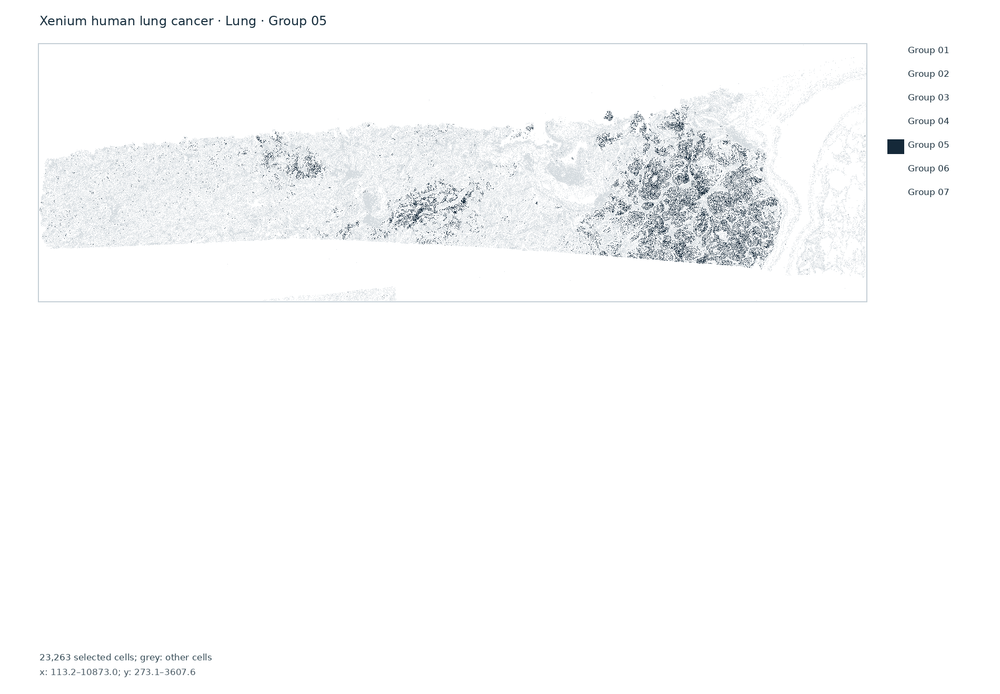
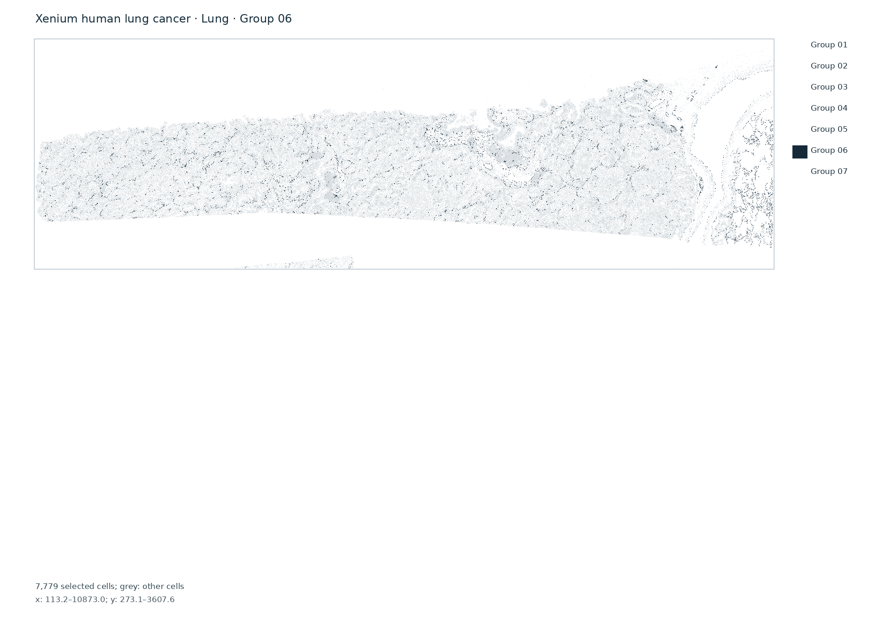
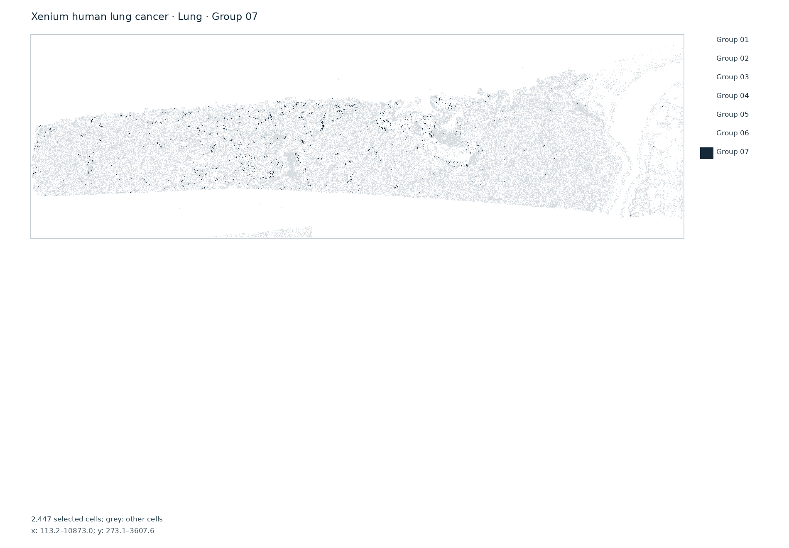

Complete native expression sample
162,254 native cells; 161,894 positive-gene cells analyzed; 377 genes; 7 anonymous expression groups. 360 zero-gene cells were excluded from clustering. The provider describes this FFPE sample as lung adenocarcinoma. That source diagnosis was not inferred by KODAMA.
This is preview data generated with a development assay and software version. Gene expression alone determined groups. Native coordinates are used for display only. No H&E Virchow2 features, Bora image refinement or class GeoJSON are claimed.
Native cell map and KODAMA embedding


Inspect all 7 group maps







Source and provenance
Verified analysis provenance · Official 10x dataset
Computed locally with pinned R 4.6/KODAMA 0.99.7 using gene-expression-only PCA30 inputs and a 15-neighbor Leiden graph at resolution 0.25. The full native cell-feature matrix, including controls, coordinates and reusable inputs are retained locally. 10x licenses the source under CC BY 4.0.